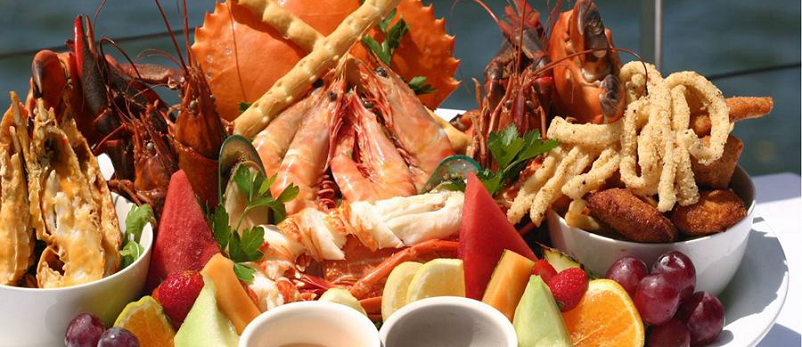
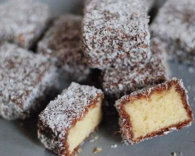
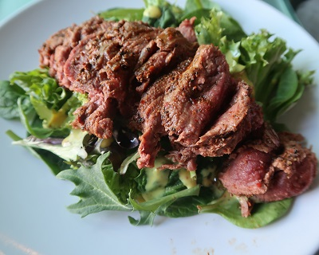
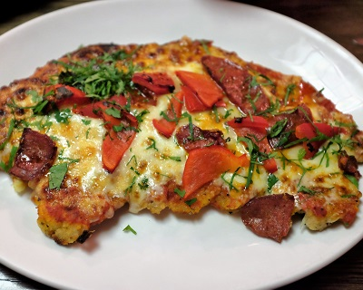
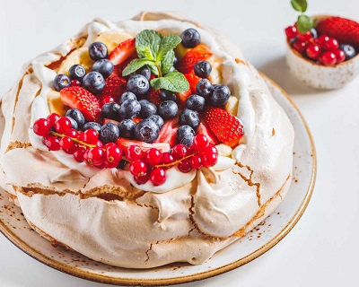

澳洲Australia


食物名稱：萊明頓蛋糕 (Lamingtons)
食物介紹：
相傳昆士蘭州總督Baron Lamington 的家傭，
有一次不小心將蛋糕塊掉入巧克力漿中，
因時間緊迫，將錯就錯，
怎料總督一嚐覺得好吃又特別，
沾上椰絲免得滿手巧克力，後來這種蛋糕便以「Lamington」命名。

食物名稱：袋鼠肉 (Kangaroo Meat)
食物介紹：食物介紹：
據2010年統計，袋鼠肉出口到55個國家。
食用袋鼠肉在澳洲其實並不普及，據2008年的調查顯示，
僅有14.5%的澳大利亞家庭每年吃四次以上的袋鼠肉，半數澳洲人從來沒吃過袋鼠肉，20%不打算嘗試吃袋鼠肉。
主要原因可能是袋鼠肉的口感和牛肉有點相似，
但沒有牛肉吃起來嫩，而且膻味很重。

食物名稱：帕馬臣芝士雞 (Chicken Parmesan)
食譜:
麵粉裡加入少許的鹽跟胡椒提味
雞胸的雙面裹上麵粉, 然後沾上蛋液
在把沾好蛋的肉裹上麵包粉( CHEESE 粉已經加到麵包粉裡)
取個平底鍋以中火用橄欖油煎雞肉, 等到雙面都成金黃色後就可以起鍋個（大約各3分鐘）
在煎好的雞肉上加上一勺的番茄醬再加上焗烤用的cheese入烤箱, 等cheese 都融化了就好囉

食物名稱：Pavlova
食物介紹：
澳洲與紐西蘭都視pavlova為具有民族象徵意義的經典甜點，
長久以來民間學界各種研究論述一來一往互不相讓，唯一讓兩國都同意的共識，
就是這款蛋糕取名自當年國際知名的俄羅斯舞者Anna Pavloa。
Pavlova帕芙洛娃是以烘烤過的蛋白霜為基底，
再加上打發的鮮奶油與水果作成的甜點。
雪白的蛋白霜底看起來就像芭蕾舞者Anna Pavlova的舞衣一般，取名取得恰如其分。